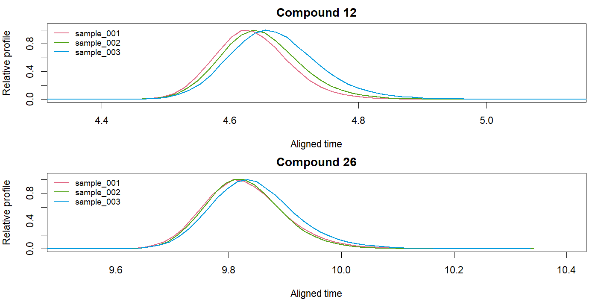
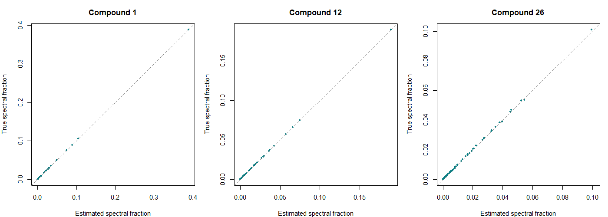

Simultaneous multisample log-concave NMF with automatic best rank tuning
Source:vignettes/articles/simultaneous-nmf.Rmd
simultaneous-nmf.RmdlogconNMF() combines related multichannel samples into a
common spectral library while fitting each sample’s own compound areas,
peak shapes and smooth background. Samples retain their measured time
grids. The model accommodates retention-time drift,
concentration-dependent widths and tails, and compounds that occur in
only some samples.
Ignoring backgrounds and offsets, the model is Y_s\approx Q_sP, with one shared nonnegative spectral factor P and sample-specific profile/area factors Q_s. This is simultaneous NMF in the terminology of Cichocki et al., Badea and Lee et al.. It is an exact shared-factor model.
fit <- logconNMF(samples, family=quasipoisson("identity"), precluster=32L)
fit$rank # estimated number of shared compounds
fit$areas # samples x consensus compounds
coef(fit, normalize="l1") # common spectra
fitted(fit, sample=1L) # original-grid fitted signal
sampleNMF(fit, sample=1L) # standard per-sample NMF object
GIC(fit)Each sample description contains y, time,
and either a candidate PSF matrix X or an independent
logconNMF() fit. Matrices can be supplied through RDS
paths. Observations, factors, weights and offsets are stored per sample.
The grouped PSF regressions run in separate workers. For joint
conditional updates the solver holds observations, fitted means and
shared spectra in memory. The general identity-link solver can stream
blocks of ions from the per-sample files. ## Three samples, shared
spectra and different peak shapes
The simulator provides exponentially modified Gaussian peaks, broad
triangular acid profiles, smooth backgrounds and irregular scan
intervals. Peak width, tailing and retention time can depend on
concentration and position in the chromatogram.
presence=0.5 makes compounds absent independently in half
of the samples on average.
sim <- simulateGCMSSamples(samples=3L, n=c(580L,600L,620L), k=26L,
preset="time_area_acid", presence=0.5, seed=811)
samples <- lapply(sim$samples, function(s) list(
y=s$Y, time=s$time, edges=s$edges, exposure=s$raw_exposure,
sample_id=s$sample_id,
X=convMatrix(dnorm(-8:8, sd=1.6), nrow(s$Y)),
background=splines::bs(s$time, df=4L, intercept=TRUE),
small_width=2 * sqrt(2 * log(100)) * 1.6 * median(diff(s$time))))
fit <- logconNMF(samples, family=poisson("identity"), ncores=8L,
control=list(initial=list(profile_cycles=4L, fusion_passes=2L)))
true_rank <- sum(rowSums(sim$present) > 0)
data.frame(true_rank, estimated_rank=fit$rank, rank_exact=fit$rank == true_rank)
fit$areas
plot(fit, type="profiles", compounds=c(1L,12L))The fit used all 258 mass channels. With every
compound present, it recovered 78 of 78 occurrences at
an estimated rank of 26 (true rank 26). With a 50% presence probability,
it recovered 37 of 37 occurrences at an estimated rank
of 23 (true rank 23). The area table records missing occurrences as
NA.
| Simulation | True rank | Estimated rank | True occurrences | Recovered | False calls | Total time |
|---|---|---|---|---|---|---|
| All compounds present | 26 | 26 (exact) | 78 | 78 | 0 | 17.06 s |
| 50% presence probability | 23 | 23 (exact) | 37 | 37 | 0 | 13.27 s |
Each timing includes independent fits, alignment, grouping and simultaneous refinement, with a budget of eight logical cores and one BLAS thread per worker on an Intel Core i9-11950H. Simulation is excluded. Recovery uses the nearest normalized true spectrum, with cosine similarity at least 0.9 and a single match per compound within each sample.

Shared spectra are estimated from all detected occurrences of a compound:

Sixteen full chromatograms
The same 16 simulated chromatograms were supplied to every program. Each contains 10,000 scans × 550 nominal mass channels (m/z 30–579), covering approximately 50 minutes. Together they contain 88 million simulated ion intensities. Each of the 1,000 distinct compounds occurs in eight randomly chosen samples. The design therefore contains 8,000 positive sample–compound pairs. Rank here counts the distinct generating compounds across the batch, each with a time-local elution profile in each positive sample. Of the compounds, 990 have exponentially modified Gaussian (EMG) peaks and ten have a rising shark-fin profile with an abrupt trailing edge. Higher concentrations broaden both types. The acquisition clock allows a smooth retention shift of up to 2.93 seconds between the first and last injections and approximately 2% variation in scan spacing.
GCMSprime, using simultaneous logconNMF, recovered the true rank of 1,000 exactly in 35.95 seconds per sample. It recovered 8,000 of 8,000 compound occurrences and made no false-positive calls. The recovered peaks included 80 of the 80 acid occurrences. MSHub returned 1,414 deconvolved components, 41.4% above the true rank. The other five workflows produce peak lists or aligned feature groups. Their outputs do not define a common factorisation rank.
| Workflow | Seconds/sample | Estimated rank (true 1,000) | TP | FP | FN | Acid TP / 80 |
|---|---|---|---|---|---|---|
| GCMSprime | 35.95 | 1,000 (exact) | 8,000 | 0 | 0 | 80 / 80 |
| MS-DIAL | 16.02 | — | 7,728 | 11,685 | 272 | 73 / 80 |
| mzmine GC-EI | 6.92 | — | 4,202 | 185 | 3,798 | 29 / 80 |
| eRah | 25.94 | — | 7,172 | 5,615 | 828 | 70 / 80 |
| AMDIS | 28.99 | — | 7,878 | 9,122 | 122 | 80 / 80 |
| xcms + CAMERA | 4.22 | — | 7,261 | 890 | 739 | 31 / 80 |
| MSHub | 15.05 | 1,414 | 7,179 | 12,184 | 821 | 50 / 80 |
Local search for the shared rank
GCMSprime calibrated the time-varying PSF on a separately generated
20-peak standard. It used a 16-thread budget with up to eight
simultaneous sample initialisations, 32 pooled mass-channel groups and
the final local rank search
(batch = list(workers = 8L, coupling = list(penalty_search = TRUE))).
The search compares changes to the original-ion GIC. It receives neither
the expected number of compounds nor their spectra. The other programs
used their local GC–EI workflows. The settings and software versions
accompany the results.
Each program ran once, in sequence, on the same 64 GB Windows laptop with eight physical cores and 16 logical processors. Seconds per sample means wall time divided by 16 for the whole batch. The comparison includes any required input conversion or staging and the program’s native analysis. GCMSprime’s time includes reading and fitting an independent PSF standard, the coupled fit and native results export. Simulation, common-format result extraction and accuracy scoring are outside the timed comparison. One run per program gives a descriptive timing for these files and this machine. The observed peak summed working set of the GCMSprime process tree was 6.8 GiB, sampled every three seconds. The final original-ion GIC was 32,610,830. Stage times per sample.
Among GCMSprime’s 8,000 matched occurrences, the median absolute relative area error was 0.095% and ordinary adjusted R² on the log₁₀ scale was 0.999982.
The examples are the EMG compound and the acid with the greatest total true area in their respective classes. Both were selected from the simulation before comparing any fits. Each occurs in eight samples. Solid curves show inferred profiles, dashed curves show the true profiles, and the eight absent true profiles coincide at zero. Colours order the 16 samples by true area. Heights retain original total-ion intensity per scan. The mean cosine in each example uses all eight positive occurrences, with a missing recovered profile scoring zero. The all-acid tally covers all ten acids.

Original scan grids, shared spectra and missing compounds
Each sample retains its measured time grid, background and noise parameters. Monotone alignment changes profile coordinates and bin widths; observations are evaluated directly without resampling. Each detected occurrence has its own log-concave shape and amplitude, while its spectrum is shared.
The joint criterion counts one unit-sum spectrum per consensus component and one amplitude per detected occurrence. Profile and background complexity are unpenalized. Original-channel likelihood checks decide whether a complete grouped/refined candidate is retained.
fit$areas
fit$compounds
fit$alignment
single <- sampleNMF(fit, sample=1L)
dim(single$H)
dim(coef(single))
plot(fit, type="areas")An absent occurrence stays NA; this model does not fill
undetected compounds. The simultaneous model and
algorithm give the exact likelihood, Jacobian, normalization, pooled
spectral updates and rank charge.
Noise, exposure and disk-backed fitting
Gaussian, Poisson, quasipoisson, NB2, NB1, censored Gamma and
common-scale Gamma are supported. Noise parameters are shared over
channels within each sample. Use positive
dispersion/theta to fix known parameters;
negative NB2 theta enables bounded likelihood-improving
updates from its absolute starting value.
Known observation exposure can be given as a scalar or scan vector in
each sample description. It multiplies the mean; the identity-link
offset adds known signal. The default unit exposure
preserves the units of supplied data. Alignment’s change in bin widths
preserves integrated occurrence areas.
Grouped PSF regressions divide the core budget between independent
samples and native threads. The scheduler estimates how many regressions
fit in available memory, including Windows commit headroom. After those
workers exit, a single process shares the original ion counts and fitted
means. OpenMP updates elution profiles across samples. It fits each
ion’s shared spectrum and sample-specific background coefficients
independently, keeping a fixed component order within each ion. The
general identity-link solver can stream original-channel blocks from
disk. Use control=list(workers=4L) for an explicit
sample-worker cap. Keep the fitted store alongside saved objects.
For sample-group directories, acquisition ordering, alkane standards and Excel/MSP reports, use the workflow in GCMSprime.